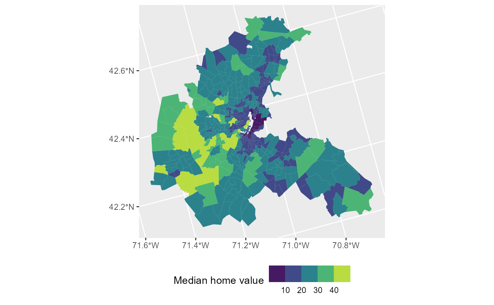
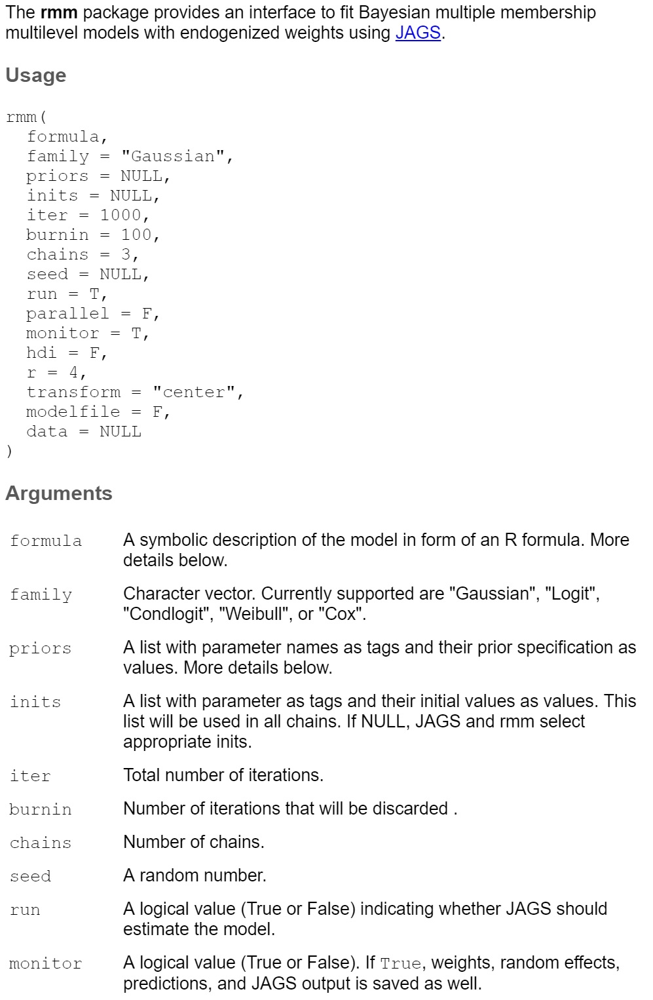
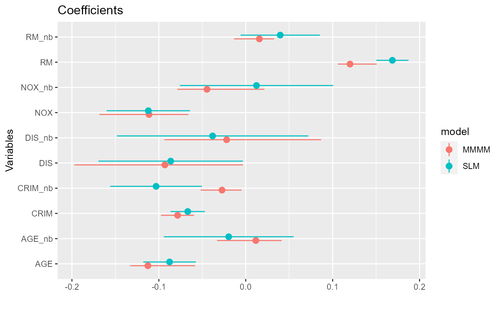

I provide three examples on how the MMMM can be employed to study spatial, network, and aggregation problems
This spatial analysis example is based on Harrison & Rubenfield 1978, who study the effect of air quality on home values.
The study employs census tract data from the Boston Standard Metropolitan Statistical Area in 1970. With tracts containing no housing units or comprised entirely of institutions excluded, the sample contains 506 census tracts. Air quality is measured by the concentration of nitric oxides in the air, which is obtained from a meteorological model (Transportation and Air Shed Simulation Model). I refer to their paper for more information on data and operationalization.
Let us load in the data and plot the home values across town:
library(spData) # spatial datasets
library(sf) # read spatial datasets
library(spdep) # create spatial weights
library(spatialreg) # spatial regression models
library(dplyr)
library(ggplot2)
library(rmm)
# Load spatial data from Boston
boston <-
read_sf(system.file("shapes/boston_tracts.shp", package = "spData")) %>%
select(CMEDV, NOX, CRIM, RM, DIS, AGE, LSTAT, geometry) %>%
st_transform(crs = 5070) %>% # use Albers equal-area conic projection
mutate(tid = row_number(), lnCMEDV=log(CMEDV), across(c(NOX, CRIM, RM, DIS, AGE, LSTAT), scale)) %>%
relocate(tid, CMEDV, lnCMEDV)
# Dependent variable:
# lnCMEDV = ln(median home value in $1000)
# Plot median home values across Boston
ggplot(boston, aes(fill = CMEDV)) +
geom_sf(color = NA) +
labs(fill = "Median home value") +
scale_fill_viridis_b() +
theme(legend.position = "bottom")
# Explanatory variables (all have been standardized):
# NOX = nitric oxides concentration
# CRIM = per capita crime
# RM = avg. number of rooms per dwelling
# DIS = weighted distance to five Boston employment centers
# AGE = proportion of units built prior 1940
# LSTAT = percentage working-class populationLet us first consider three canonical spatial regression models:
More information on those models and combinations of them can be found in Gibbons, Overman & Patacchini 2015.
To specify any of those models, we have to create a spatial weight matrix \(W\), which imposes a structure in terms of what are the neighbors for each location. \(W\) is a NxN table, where N equals the number of neighborhoods. Each weight \(w_{ij}\) represents the relationship between location \(i\) and \(j\) and, by convention, \(w_{ij}=0\) for diagonal elements. The relationship can either be based on direct contiguity and therefore binary (1=neighbor, 0=otherwise), or based on distance and therefore continuous. Continuous weights are often row-standardized so that the weights of all neighbors j of location i sum to 1.
The R package spatialreg takes the weight matrix as list:
# Create row-standardized weight matrix
boston_nb <- poly2nb(as_Spatial(boston), row.names = boston$tid) # from polygon list to neighbor list
boston_wmat <- nb2mat(boston_nb, zero.policy = TRUE) %>% as.matrix() # weight matrix
boston_wlist <- nb2listw(boston_nb, style = "W") # weight matrix as listNow let us estimate the three models:
# Residual spatial effect (spatial error model):
mod1 <- errorsarlm(lnCMEDV ~ NOX + CRIM + RM + DIS + AGE,
data = boston,
listw = boston_wlist)
summary(mod1)
#>
#> Call:
#> errorsarlm(formula = lnCMEDV ~ NOX + CRIM + RM + DIS + AGE, data = boston,
#> listw = boston_wlist)
#>
#> Residuals:
#> Min 1Q Median 3Q Max
#> -0.8619402 -0.0727632 0.0019691 0.0727349 0.8610672
#>
#> Type: error
#> Coefficients: (asymptotic standard errors)
#> Estimate Std. Error z value Pr(>|z|)
#> (Intercept) 3.0114297 0.0424386 70.9596 < 2.2e-16
#> NOX -0.1245513 0.0238428 -5.2238 1.752e-07
#> CRIM -0.0555032 0.0098813 -5.6170 1.943e-08
#> RM 0.1644857 0.0093976 17.5029 < 2.2e-16
#> DIS -0.0805092 0.0328909 -2.4478 0.01437
#> AGE -0.0851376 0.0153088 -5.5613 2.677e-08
#>
#> Lambda: 0.83765, LR test value: 385.28, p-value: < 2.22e-16
#> Asymptotic standard error: 0.026879
#> z-value: 31.164, p-value: < 2.22e-16
#> Wald statistic: 971.18, p-value: < 2.22e-16
#>
#> Log likelihood: 177.6898 for error model
#> ML residual variance (sigma squared): 0.023977, (sigma: 0.15484)
#> Number of observations: 506
#> Number of parameters estimated: 8
#> AIC: -339.38, (AIC for lm: 43.904)
# Exogenous spatial effect (spatial lag model):
mod2 <- lmSLX(lnCMEDV ~ NOX + CRIM + RM + DIS + AGE,
data = boston,
listw = boston_wlist,
Durbin = ~ NOX + CRIM + RM + DIS + AGE)
summary(mod2)
#>
#> Call:
#> lm(formula = formula(paste("y ~ ", paste(colnames(x)[-1], collapse = "+"))),
#> data = as.data.frame(x), weights = weights)
#>
#> Residuals:
#> Min 1Q Median 3Q Max
#> -0.81643 -0.11781 -0.01231 0.08904 1.30970
#>
#> Coefficients:
#> Estimate Std. Error t value Pr(>|t|)
#> (Intercept) 3.030800 0.010428 290.654 < 2e-16 ***
#> NOX -0.145492 0.040170 -3.622 0.000323 ***
#> CRIM -0.058508 0.015028 -3.893 0.000112 ***
#> RM 0.153828 0.014344 10.725 < 2e-16 ***
#> DIS -0.065969 0.074525 -0.885 0.376480
#> AGE -0.091897 0.023691 -3.879 0.000119 ***
#> lag.NOX 0.089066 0.048430 1.839 0.066503 .
#> lag.CRIM -0.174185 0.022791 -7.643 1.11e-13 ***
#> lag.RM 0.080744 0.022112 3.652 0.000288 ***
#> lag.DIS -0.036091 0.079873 -0.452 0.651567
#> lag.AGE 0.009673 0.034647 0.279 0.780225
#> ---
#> Signif. codes: 0 '***' 0.001 '**' 0.01 '*' 0.05 '.' 0.1 ' ' 1
#>
#> Residual standard error: 0.2339 on 495 degrees of freedom
#> Multiple R-squared: 0.6783, Adjusted R-squared: 0.6718
#> F-statistic: 104.4 on 10 and 495 DF, p-value: < 2.2e-16
# Endogenous spatial effect (spatial autoregressive model):
mod3 <- lagsarlm(lnCMEDV ~ NOX + CRIM + RM + DIS + AGE,
data = boston,
listw = boston_wlist)
summary(mod3)
#>
#> Call:lagsarlm(formula = lnCMEDV ~ NOX + CRIM + RM + DIS + AGE, data = boston,
#> listw = boston_wlist)
#>
#> Residuals:
#> Min 1Q Median 3Q Max
#> -0.5905925 -0.0937669 -0.0081804 0.0784800 0.9956998
#>
#> Type: lag
#> Coefficients: (asymptotic standard errors)
#> Estimate Std. Error z value Pr(>|z|)
#> (Intercept) 0.9939659 0.0860809 11.5469 < 2.2e-16
#> NOX -0.0286955 0.0134985 -2.1258 0.0335176
#> CRIM -0.0606110 0.0087944 -6.8920 5.501e-12
#> RM 0.1343823 0.0088565 15.1732 < 2.2e-16
#> DIS -0.0627520 0.0132732 -4.7277 2.271e-06
#> AGE -0.0458586 0.0124080 -3.6959 0.0002191
#>
#> Rho: 0.67045, LR test value: 347.92, p-value: < 2.22e-16
#> Asymptotic standard error: 0.028312
#> z-value: 23.681, p-value: < 2.22e-16
#> Wald statistic: 560.8, p-value: < 2.22e-16
#>
#> Log likelihood: 159.0057 for lag model
#> ML residual variance (sigma squared): 0.028135, (sigma: 0.16774)
#> Number of observations: 506
#> Number of parameters estimated: 8
#> AIC: -302.01, (AIC for lm: 43.904)
#> LM test for residual autocorrelation
#> test value: 15.915, p-value: 6.6236e-05Results:
The spatial error model estimates that after conditioning on those five covariates, the residual is still spatially correlated, as \(\lambda=0.84\).
The spatial lag model estimates an exogenous spatial effect for each of the considered covariates. The spatial effect of air quality, for instance, is estimate to be \(\beta_{WX}=0.09\). That is, the home values of a given neighborhood (and given air quality) increase in value if the air quality of surrounding neighborhoods decreases.
The spatial autoregessive (SAR) model estimates a endogenous spatial effect of \(\rho=0.67\). That is, the SAR summarizes the spatial dependency in one coefficient.
Let \(y_{i}\) be the outcome of location \(i\). Using the MMMM, we can model this outcome in terms of (i) effects of the location’s own features \(x_{i}^{\intercal}\beta+\epsilon_{i}\) and (ii) effects its neighbor’s features \(\sum_{j \in n(i)}w_{j}(z_{j}^{\intercal}\gamma+u_{j})\), where \(j\) indexes the neighbors, \(n(i)\) is the set neighbors of location \(i\), \(z_{j}\) represents the observed features of neighbor \(j\), and \(u_{j}\) represents the combined influence of unobserved features.
This model is almost identical to the combination of a spatial lag and a spatial error model. The only difference is that the error of each location is split into a random effect for its role as focal location and a random effect for its role as neighbor.
To me, the combination of exogenous spatial effects and spatial error makes the most sense as the entire right-hand side of a neighbor affects a location. The endogenous spatial effect model is more difficult to interpret and runs into identification problems when both endogenous and exogenous effects are included (spatial Durbin model).
To estimate a spatial MMMM, the neighbors of each location must be included in the dataframe as individual rows:
# Neighbor list to data.frame
nb2df <- function(nb) {
return(
data.frame(tid = unlist( mapply(rep, 1:length(nb), sapply(nb, length), SIMPLIFY = FALSE) ), tid_nb = unlist(nb) )
)
}
boston_df <-
nb2df(boston_nb) %>%
group_by(tid) %>%
mutate(n=n()) %>%
ungroup() %>%
inner_join(boston, by=c("tid")) %>% # own features
inner_join( # neighbor features
as.data.frame(boston) %>%
select(-CMEDV,-lnCMEDV, -geometry) %>%
rename_with(~paste0(.,"_nb")),
by=c("tid_nb"))
head(boston_df %>% select(tid, tid_nb, NOX, CRIM, NOX_nb, CRIM_nb))
#> # A tibble: 6 x 6
#> tid tid_nb NOX[,1] CRIM[,1] NOX_nb[,1] CRIM_nb[,1]
#> <int> <int> <dbl> <dbl> <dbl> <dbl>
#> 1 1 2 1.86 0.624 1.86 0.0275
#> 2 1 3 1.86 0.624 1.86 0.185
#> 3 1 6 1.86 0.624 1.86 0.0260
#> 4 1 8 1.86 0.624 1.86 0.0708
#> 5 1 311 1.86 0.624 0.434 -0.272
#> 6 1 313 1.86 0.624 0.434 -0.207We can see that, for each tract tid, we have one row for each of its neighbors tid_nb. These rows include the covariates of tid, which don’t change across its neighbors, and covariates of the neighbors themselves NOX_nb, CRIM_nb, ....
Now we are ready to estimate the MMMM:
# Spatial random effect:
mod.rmm1 <-
rmm(lnCMEDV ~
NOX + CRIM + RM + DIS + AGE +
mm(
id(tid, tid_nb),
mmc(),
mmw(w ~ 1/offset(n), constraint=1)
),
iter = 1000, burnin = 100, monitor = T,
data = boston_df)
#> module glm loaded
#> Compiling model graph
#> Resolving undeclared variables
#> Allocating nodes
#> Graph information:
#> Observed stochastic nodes: 506
#> Unobserved stochastic nodes: 1020
#> Total graph size: 20565
#>
#> Initializing model
names(mod.rmm1)
#> [1] "reg.table" "w" "re.l1" "re.l3" "pred" "input"
#> [7] "jags.out"
mod.rmm1$reg.table
#> variable coefficients sd lb ub ppp
#> b.l2[1] X0 3.0321 0.2015 2.9881 3.0726 0.0004
#> b.l2[2] NOX -0.1399 0.3038 -0.1797 -0.0829 0.0011
#> b.l2[3] CRIM -0.0789 0.3826 -0.0996 -0.0616 0.0019
#> b.l2[4] RM 0.1331 0.3464 0.1065 0.1514 0.0007
#> b.l2[5] DIS -0.1105 0.8414 -0.1513 -0.0299 0.0033
#> b.l2[6] AGE -0.1064 0.3776 -0.1357 -0.0615 0.0015
#> sigma.l1 sigma.l1 0.4453 0.2864 0.3865 0.4888 NA
#> sigma.l2 sigma.l2 0.2193 1.8668 0.1345 0.1647 NA
#> DIC DIC 32177.7906 NA NA NA NA
# Spatial fixed effects + spatial random effect:
mod.rmm2 <-
rmm(lnCMEDV ~
NOX + CRIM + RM + DIS + AGE +
mm(
id(tid, tid_nb),
mmc(NOX_nb + CRIM_nb + RM_nb + DIS_nb + AGE_nb),
mmw(w ~ 1/offset(n), constraint=1)
),
iter = 1000, burnin = 100, monitor = T,
data = boston_df)
#> Compiling model graph
#> Resolving undeclared variables
#> Allocating nodes
#> Graph information:
#> Observed stochastic nodes: 506
#> Unobserved stochastic nodes: 1025
#> Total graph size: 41453
#>
#> Initializing model
mod.rmm2$reg.table
#> variable coefficients sd lb ub ppp
#> b.l1[1] NOX_nb -0.0446 0.5878 -0.0787 0.0214 0.1356
#> b.l1[2] CRIM_nb -0.0273 0.2136 -0.0520 -0.0048 0.0115
#> b.l1[3] RM_nb 0.0157 0.2733 -0.0134 0.0325 0.1915
#> b.l1[4] DIS_nb -0.0220 0.8619 -0.0936 0.0867 0.4541
#> b.l1[5] AGE_nb 0.0116 0.2533 -0.0330 0.0413 0.4326
#> b.l2[1] X0 3.0219 0.5132 2.9882 3.0697 0.0007
#> b.l2[2] NOX -0.1113 1.0844 -0.1684 -0.0660 0.0011
#> b.l2[3] CRIM -0.0784 0.1892 -0.0975 -0.0595 0.0015
#> b.l2[4] RM 0.1200 0.4808 0.1060 0.1507 0.0015
#> b.l2[5] DIS -0.0931 0.5252 -0.1972 -0.0033 0.0222
#> b.l2[6] AGE -0.1126 0.6765 -0.1329 -0.0582 0.0011
#> sigma.l1 sigma.l1 0.4454 0.7051 0.3726 0.4724 NA
#> sigma.l2 sigma.l2 0.2338 2.0130 0.1368 0.1674 NA
#> DIC DIC 38215.1477 NA NA NA NA
# Calculate spatial correlation in the residual
getLambda <- function(x) {
s.l1 <- x$reg.table["sigma.l1", "coefficients"]
s.l2 <- x$reg.table["sigma.l2", "coefficients"]
return(s.l1^2/(s.l1^2+s.l2^2))
}
(lambda1 <- getLambda(mod.rmm1))
#> [1] 0.8048072
(lambda2 <- getLambda(mod.rmm2))
#> [1] 0.7839802Lets look at the rmm() function in more detail by typing ?rmm:

The formula object
The most important part is the formula object, which is our case looks like this: lnCMEDV ~ NOX + CRIM + RM + DIS + AGE + mm(id(tid, tid_nb), mmc(NOX_nb + CRIM_nb + RM_nb + DIS_nb + AGE_nb), mmw(w ~ 1/offset(n), constraint=1))
The only change compared to a lm() formula is the mm() container. Within this container, we specify 3 containers, ids() for the ids, mmc() for the considered covariates, and mmw() to endogenize the weight function. Here w ~ 1/offset(n) is specified, which implements the row-standardized weight.
The combination of spatial lag and spatial error model can also be estimated in the spatial regression framework. Let us do that and compare the estimates:
# Exogenous + residual spatial effect (combination of spatial lag model and spatial error model):
mod2 <- errorsarlm(lnCMEDV ~ NOX + CRIM + RM + DIS + AGE,
data = boston,
listw = boston_wlist,
Durbin = ~ NOX + CRIM + RM + DIS + AGE)
summary(mod2)
#>
#> Call:
#> errorsarlm(formula = lnCMEDV ~ NOX + CRIM + RM + DIS + AGE, data = boston,
#> listw = boston_wlist, Durbin = ~NOX + CRIM + RM + DIS + AGE)
#>
#> Residuals:
#> Min 1Q Median 3Q Max
#> -0.8517313 -0.0713016 -0.0070739 0.0658620 0.8967407
#>
#> Type: error
#> Coefficients: (asymptotic standard errors)
#> Estimate Std. Error z value Pr(>|z|)
#> (Intercept) 3.0149075 0.0331295 91.0037 < 2.2e-16
#> NOX -0.1120990 0.0244750 -4.5801 4.647e-06
#> CRIM -0.0667568 0.0100662 -6.6317 3.317e-11
#> RM 0.1687197 0.0094507 17.8526 < 2.2e-16
#> DIS -0.0863850 0.0423890 -2.0379 0.0415587
#> AGE -0.0876803 0.0154299 -5.6825 1.328e-08
#> lag.NOX 0.0123545 0.0449974 0.2746 0.7836542
#> lag.CRIM -0.1031677 0.0269163 -3.8329 0.0001266
#> lag.RM 0.0396613 0.0232693 1.7044 0.0882981
#> lag.DIS -0.0381250 0.0561561 -0.6789 0.4971937
#> lag.AGE -0.0196289 0.0380985 -0.5152 0.6064036
#>
#> Lambda: 0.79294, LR test value: 328.64, p-value: < 2.22e-16
#> Asymptotic standard error: 0.031295
#> z-value: 25.337, p-value: < 2.22e-16
#> Wald statistic: 641.98, p-value: < 2.22e-16
#>
#> Log likelihood: 187.0501 for error model
#> ML residual variance (sigma squared): 0.023764, (sigma: 0.15416)
#> Number of observations: 506
#> Number of parameters estimated: 13
#> AIC: -348.1, (AIC for lm: -21.461)
# Plot coefficients next to each other
coefs <-
mod.rmm2$reg.table[,c(1,2,4,5)] %>%
mutate(model="MMMM") %>%
add_row(
data.frame(model="SLM", coefficients=coef(mod2)[-1], confint(mod2, level=0.95)[-1,]) %>%
rename(lb=X2.5.., ub=X97.5..) %>%
rownames_to_column("variable") %>%
mutate(
variable=
case_when(
startsWith(variable, "lag.") ~ paste0(sub("lag.", "", variable), "_nb"),
variable=="(Intercept)" ~ "X0",
TRUE ~ variable))
) %>%
filter(!variable %in% c("X0", "sigma.l1", "sigma.l2", "DIC"))
ggplot(coefs, aes(x=variable, y=coefficients, color=model))+
geom_point(position=position_dodge(width=0.3))+
geom_pointrange(aes(ymin = lb, ymax = ub), position=position_dodge(width=0.3))+
labs(title = "Coefficients", x = "Variables", y="") + coord_flip()
The estimates are similar but not identical. This is due to the different estimation algorithm (maximum likelihood vs Bayesian MCMC) and because the models are not 100% identical.
The advantage of errorsarlm is that estimation is faster and the errors are endogenous. So if this model is what you want, it’s probably best to estimate it with the spatialreg package.
Weight function regression
The MMMM, however, allows to make the weights a function of covariates. That is, instead of assuming a specific weighting regime, we can estimate whether the influence of a neighbor on a location depends on some covariates.
For this example, I hypothesize that the weight of a neighbor in the total neighborhood effect depends on the similarity between neighbor and focal location, which is an idea I borrow from social network theory.
I calculate similarity as the average absolute difference between a neighbor and the focal location on the six considered covariates.
# Homogeneity of focal location to its neighbors
boston_df2 <- boston_df %>% mutate(DIFF=1/6*abs(NOX-NOX_nb)+abs(CRIM-CRIM_nb)+abs(RM-RM_nb)+abs(DIS-DIS_nb)+abs(AGE-AGE_nb)+abs(LSTAT-LSTAT_nb)) The weight function is specified in the mmw() container. Any function that produces weights that are bounded can be specified here. Functions, such as min, max, sum etc., can also be included in the weight function. Here I consider the following functional form: \(w=\frac{1}{n^{exp(X\beta)}}\), where \(n\) is the number of neighbors of location \(i\), and \(X\beta\) are the covariates on which to base the weights on. The benefit of this function is that it is bounded between 0 and 1 and if \(X\beta=\boldsymbol{0}\), the weights reduce to \(w=\frac{1}{n}\), which are the default row-standardized weights.
The issue of scaling:
The sum of all weights with row-standardized weights is \(\sum_{i=1}^{506}\sum_{j}w_{ij}=\sum_{i=1}^{506}1=506\). We need to make sure that this overall sum does not change. Remember that aggregation of neighbor effects is \(\sum_{j \in n(i)}w_{j}(z_{j}^{\intercal}\gamma+u_{j})\). Changes of the sum of weights will rescale the regression coefficients \(\gamma\). To avoid that, two constraints can be specified:
constraint=1: contrains the weights of neighbors to sum 1 for each focal location (but allows them to differ within each location)constraint=2: constraints the all weights to sum up to the number of neighborhoods (allows them to differ within and across location)Both constrains identify the model but have different substantive interpretations.
Here I allow the weights to differ within and across location:
# Spatial fixed effects + spatial random effect with "endogenized" weights:
mod.rmm3 <-
rmm(lnCMEDV ~
NOX + CRIM + RM + DIS + AGE +
mm(
id(tid, tid_nb),
mmc(NOX_nb + CRIM_nb + RM_nb + DIS_nb + AGE_nb),
mmw(w ~ 1/offset(n)^exp(-DIFF), constraint=2)
),
iter = 1000, burnin = 100, monitor = T,
data = boston_df2)
#> Compiling model graph
#> Resolving undeclared variables
#> Allocating nodes
#> Graph information:
#> Observed stochastic nodes: 506
#> Unobserved stochastic nodes: 1026
#> Total graph size: 53159
#>
#> Initializing model
mod.rmm3$reg.table
#> variable coefficients sd lb ub ppp
#> b.l1[1] NOX_nb -0.0098 0.0245 -0.0583 0.0406 0.3363
#> b.l1[2] CRIM_nb -0.0506 0.0622 -0.1795 0.0054 0.0956
#> b.l1[3] RM_nb 0.0201 0.0182 -0.0061 0.0623 0.0974
#> b.l1[4] DIS_nb -0.0040 0.0437 -0.0873 0.0829 0.4463
#> b.l1[5] AGE_nb -0.0014 0.0191 -0.0398 0.0341 0.4789
#> b.l2[1] X0 3.0094 0.0167 2.9758 3.0413 0.0000
#> b.l2[2] NOX -0.1000 0.0269 -0.1506 -0.0462 0.0000
#> b.l2[3] CRIM -0.0906 0.0196 -0.1290 -0.0580 0.0000
#> b.l2[4] RM 0.1524 0.0123 0.1289 0.1768 0.0000
#> b.l2[5] DIS -0.0731 0.0466 -0.1631 0.0153 0.0530
#> b.l2[6] AGE -0.0867 0.0219 -0.1264 -0.0395 0.0004
#> b.w[2] DIFF -23.0008 43.0749 -148.8816 0.2729 0.6548
#> sigma.l1 sigma.l1 0.2856 0.1405 0.0259 0.4282 NA
#> sigma.l2 sigma.l2 0.1786 0.0541 0.1281 0.2662 NA
#> DIC DIC 2117.5613 NA NA NA NAWe find that the difference between location and neighbors significantly impacts the weights. However, opposite to the homophily idea. Those neighbors that are very different to the focal location in terms of air quality, level of crime, etc. have a stronger influence on the home values in the focal neighborhood.
Such a insight is impossible to generate with the conventional spatial regression package. Let us have a look at the weight estimates:
head(data.frame(mod.rmm3$w, sum=rowSums(mod.rmm3$w, na.rm = T)))
#> W1 W2 W3 W4 W5 W6 W7 W8 W9 W10
#> L2 unit 1 0.1620 0.1637 0.1500 0.1640 0.1130 0.2226 0.2580 0.1527 NA NA
#> L2 unit 2 0.2359 0.2066 0.1957 0.1798 NA NA NA NA NA NA
#> L2 unit 3 0.1637 0.1431 0.1283 0.1449 0.0861 0.0898 0.2077 0.2267 NA NA
#> L2 unit 4 0.1957 0.1810 0.2148 0.1968 NA NA NA NA NA NA
#> L2 unit 5 0.1385 0.1414 0.1423 0.0734 0.1612 0.1796 0.0751 0.1350 0.1483 NA
#> L2 unit 6 0.1715 0.1432 0.1555 0.1704 0.1924 0.1583 NA NA NA NA
#> W11 W12 W13 W14 W15 sum
#> L2 unit 1 NA NA NA NA NA 1.3860
#> L2 unit 2 NA NA NA NA NA 0.8180
#> L2 unit 3 NA NA NA NA NA 1.1903
#> L2 unit 4 NA NA NA NA NA 0.7883
#> L2 unit 5 NA NA NA NA NA 1.1948
#> L2 unit 6 NA NA NA NA NA 0.9913
sum(rowSums(mod.rmm3$w, na.rm = T))
#> [1] 505.9991To do: